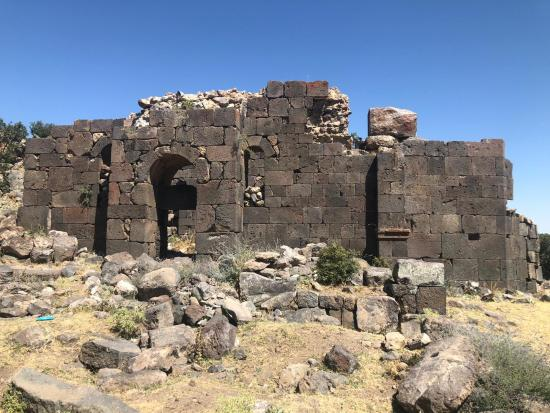
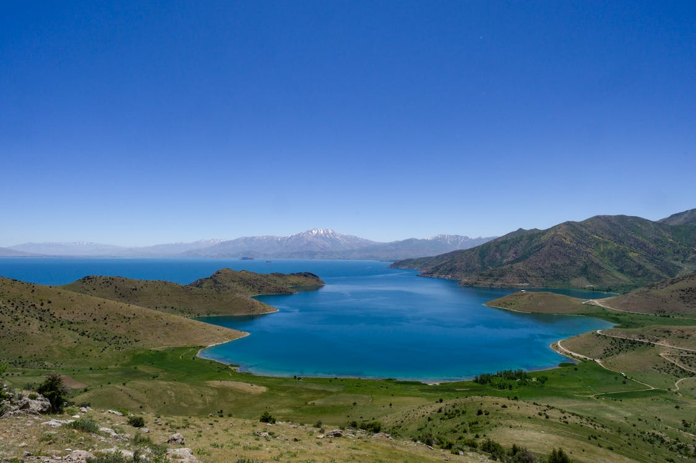

Van Şehri |
|
Anasayfa 
Doğu Anadolu Bölgesi'nde yer alan Van, doğudan İran ile, batıdan Van Gölü ile çevrilidir. Kültürel ve doğal güzellikleri, ulaşım olanakları ve dört mevsim iklim koşullarıyla Van, önemli bir turizm kentidir. Van kedisiyle ünlüdür.Tarihi M.Ö. 5000 yıllarına dayanan Van şehri, İpek Yolu üzerinde bulunması sebebiyle tarih boyunca önemli bir yerleşim alanı olmuştur. Urartu'ların başkentliğini yapan Van, bu özelliklerinin yanında tabii güzellikleriyle de bir doğa cennetidir. Arkeolojik turizm, Van'ın gelişmiş yönlerinden birisidir. Kentte çok sayıda tarihi kale bulunur. Çavuştepe'de bulunan Çavuştepe Kalesi 1960'lı yıllarda yapılmış diğer önemli bir çalışmadır. Agarti, Kayanis, Kef, Aşağı ve Yukarı Zifistan, Hiset, Kalecik, Muradiye, Yoncatepe, Mukus Kaleleri kentteki kalelerden örneklerdir. Tilkitepe, Karagündüz ve Dilkaya Höyükleri kentin tarih mirasından önemli yapıtlardır. Karagündüz Tümülüsü, Karagündüz Köyü'ndeki Ercek Gölü kıyısında bulunan bir adadır. Van Gölü canavarı ile efsaneleşen Van Gölü, dünyanın en büyük sodalı gölüdür. İçerisinde hem tatlı hem de tuzlu suyu aynı anda barındırır ve oldukça benzersiz bir manzaraya ev sahipliği yapar. Bu nedenle Van geziniz sırasında deneyimleyeceğiniz Van Gölü, tıpkı diğer ziyaretçileri gibi size de unutulmaz bir anı olacaktır. 
|
Şehir Tarihçesi Yemekler Gezi Rehberi Ulaşım Duyurular Haberler İletişim |
| Bir Umut Furkan Berrak ürünüdür ©2021 | |